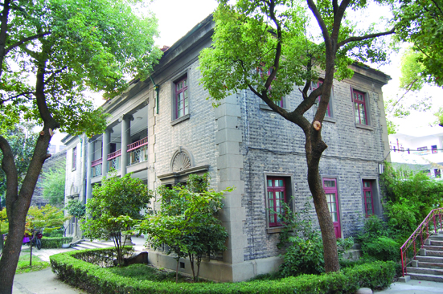

嘉兴市文物保护网 · 市级文物保护单位 · 2014-06-19 · 原文

宏文馆位于嘉兴市南湖区建设街道道前街63号嘉兴机关幼儿园内，原为清代嘉兴府秀才考试之所，旧时院内古木葱郁。1928年宏文馆塌损，地方人士筹资新建三开间两层西式洋楼，改作嘉兴图书馆。1937年馆舍被日寇所占，抗日胜利后改为国民党县政府办公楼，解放后又改为嘉兴专员分署驻址。1953年起改作机关幼儿园至今。该馆为两层楼房，坐北朝南，砖混结构，占地面积225平方米，通面阔22.5米，通进深10米。风格中西合璧，廊道有罗马柱，窗套上有巴洛克风格雕刻，屋顶为硬山顶，墙体青砖砌筑。宏文馆历史上曾做过许多重要机构办公场所，建筑兼具东西方建筑的特点，对于研究嘉兴的近代史和建筑具有较高的历史、科学和艺术价值。2001年公布为嘉兴市级文物保护单位。